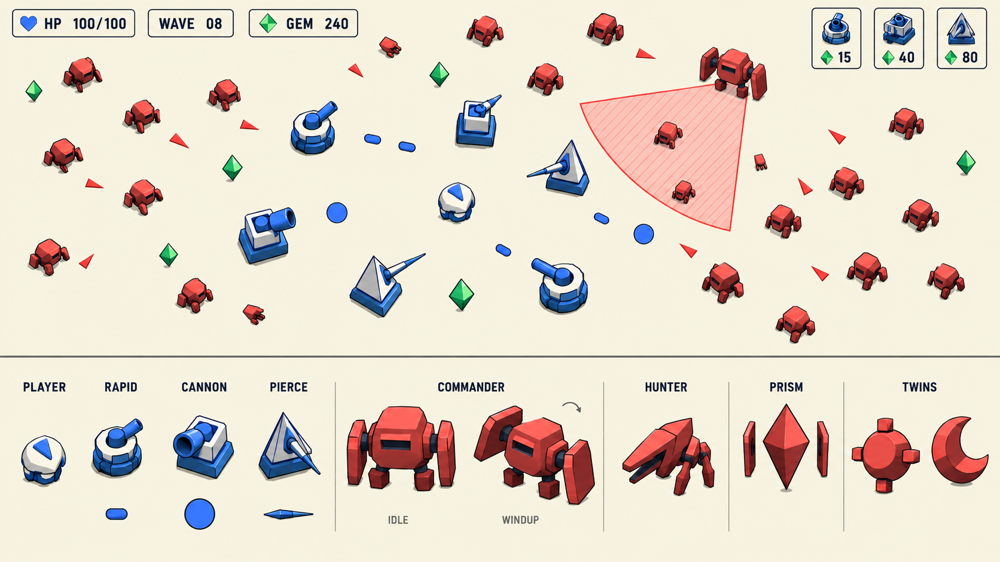
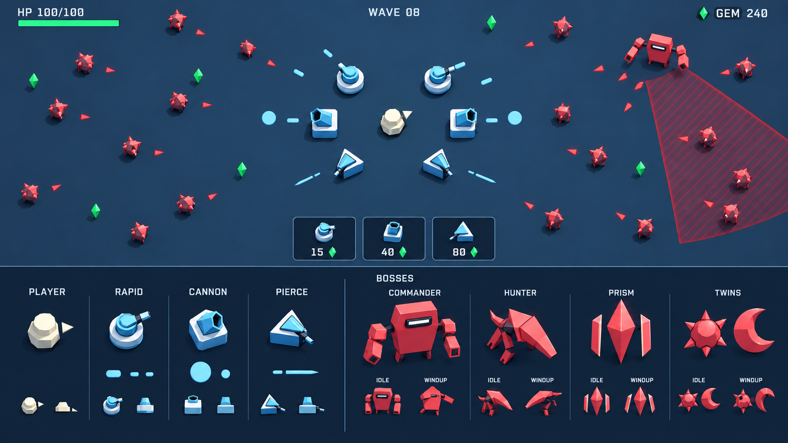
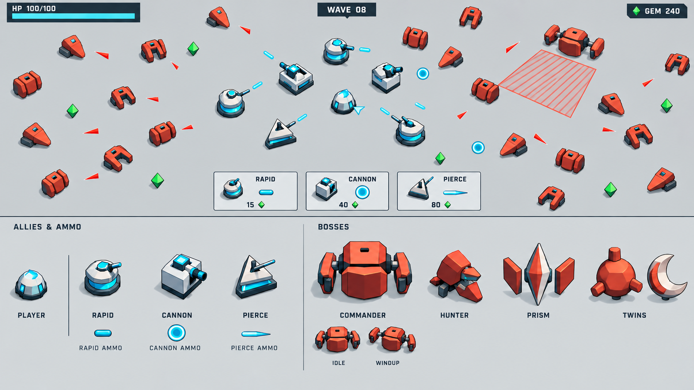
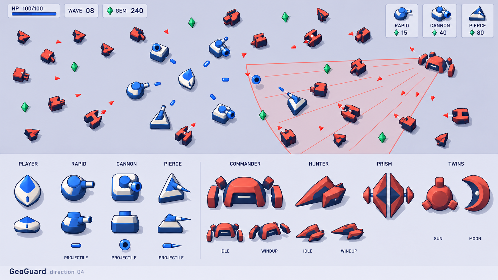

第四轮：简单模型、有限块面与色阶化阴影。每稿包含游戏战斗概念、玩家、三塔与弹体、四个 Boss；修订重点为短投影、清楚弹体和克制 Boss 尺寸。

暖色地面、硬色阶、细轮廓。模型和器械关系直观，修订降低投影与弹体高光。

深色舞台、淡青友军和朱红敌军，强调视觉层级；修订控制弹体发光和深色面。

大倒角、低矮工业块面和清楚炮口；修订扩展普通敌剪影并减少棱镜的水晶感。

少量圆钝多边形与两三级色阶，强调轻盈体积；修订补地面预警与方炮大口。
查看比稿评估、实用性规则与落地路径